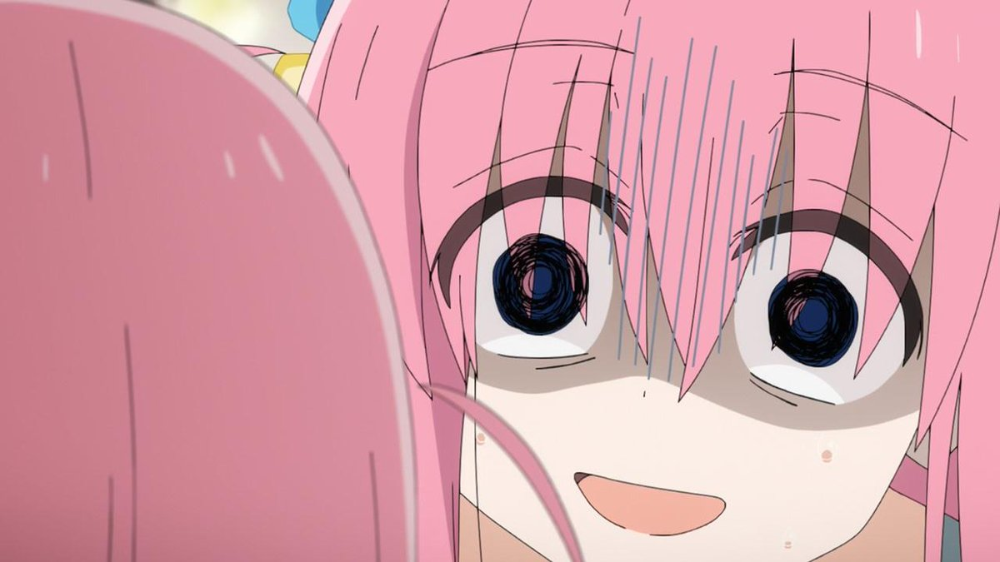

You've been Bocchi'ed

Did you truly believe i was going to add a recipe here? I am not that dedicated. I was bored, so i decided to Bocchi you instead. Now, you have no option but to hear about the greatness of Bocchi using a bunch of beautifully organized list
Ingredients
- A socially anxious guitarrist
- A mildy succesfull YouTube channel
- A pink tracksuit
- A hand-me-down guitar from the guiotarrist's father
- A gigantic delusion of grandeur
This are the ingrediants to prepare the perfect Bocchi. Altough we'll do a step-by-step explanation of the Bocchi-making process, it is important to get a few things out of the way first.
- Remember to keep your Bocchi Mixture isolated for 13-15 years. This will make the eventual character development more impactful
- Provide your Bocchi Mixture with a loving family enviroment, this will nurture the future Bocchi
- Beware of the possible changes in your Bocchi Mixture, a significant cahnge in the enviroment my produce a different Bocchi,such as:
Brown Haired Bocchi
Komi-San-Bocchi
More content to be added soon
Click here to listen to A City Pop Playlist>